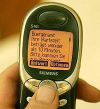

Bromas telefónicas
 De: La Frikipedia, la enciclopedia extremadamente seria.
De: La Frikipedia, la enciclopedia extremadamente seria.
«La empresa con la que habla no tiene nada en contra de BROMAS TELEFÓNICAS, por favor seleccione el tipo de pizza que quiere»
~ La máquina que te coje el teléfono en la pizzería de la esquina , mi no entender.
«En efecto yo soy el que gastaba las bromas»
~ Bill Gates , hablando de como trató de hundir a Linux haciendo bromas telefónicas.
| De la serie fenómenos sociológicos:
|
| Bromas telefónicas
|
| [[Image:|200x200px|]]
|
| Es imposible fallar con ese manual.
|
|
| Fenómeno sociológico
|
Putadusus Horribilis
|
| Principios
|
Ústed cállese
|
| Zona de origen
|
Y yo que se a mi no me pagan por pensar
|
| Consecuencias
|
o dios mio no me pagan por nada
|
| Símbolos típicos
|
el móvil, la patata frita
|
| Frikismo
|
mucho
|
| ¿Gusta a la gente normal?
|
depende de que lado del telefono estén
|
| ¿Recomendable?
|
del todo
|
| Máximo exponente
|
Dr. Tangalanga
|
La broma (del latín putadasus horribilis) es el hecho de por acción o inacción hacer que alguien crea lo que es mentira o que haga algo estúpido. Usted mismo está sufriendo este fenómeno, pues acude aquí en busca de gracietas y es recompensado con una aburrida disertación sobre el tema intrínsecamente propio de las bromas telefónicas y por otra parte...
Aquí faltan 20 páginas que hablan de la Revolución Francesa.
...y de ahí el hecho de que Napoleón jamás tomara canelones.
Gracias por su atención.
Fdo: el hombre más aburrido del mundo.
Pdata: esto no tiene gracia que alguien nos salve de esto por Dios. Necesito ayuda, esto no tiene ni p... gracia.
 tu mejor amigo a la hora de gastar bromas
La broma a través de la historia
La broma telefónica surge aproximadamente en los últimos 5000000000000000000000000000 años. La primera broma se la gastó Uggh Barbalarga (conocido por haber sido presidente de Roag Graotut rey de los Antifrikis que posteriormente sería conocido como el jodio papa. La primera broma consistió en el típico mira ahí y CATAPLUMBLUMBLUM ostia que te cayó. Tras este delirante suceso hay que esperar varios millones de años hasta que Julio César dijera:
Tras esta penosa broma (casi tan penosa como este artículo) y la decapitación de los generales que no se rieron la historia de las bromas se mantiene oculta hasta nuestros días.
La broma moderna
En nuestros tiempos la broma alcanza un nuevo nivel en el que no tiene por que tener sentido (como este artículo) ,ni siquiera gracia. La llegada de los modernos aparatos de comunicación a distancia permite la creación de las conocidas bromas a distancia (en inglés LDB, Large Distance Broming).
Ejemplos de bromas telefónicas a empresas de telefonía (porque los números van gratis, que si no)
Todas las bromas siguientes están inspiradas en bromas irreales gastadas a Empresas de telefonía, si quieres gastar una puedes, pero haya tú con tu conciencia.
- Llamar a cualquier sitio (si es una empresa mejor, recomendamos Garrafone o Vomistar), cuando te cojan el teléfono habla en inglés, cuando te pasen con un inglés, habla en francés, cuando te pasen con un francés habla en alemán, luego en japones, ruso,etc. Cuando se cansen y te empiecen a insultar en español haz como si te estuvieran llamando ellos a ti y oféndete diciéndoles que te vas a cambiar de compañía.
- Llama diciendo que eres de una secta (cada poco tiempo di gilipolleces sin sentido en élfico) y pregúntale si alguien quiere transcender contigo. Diles que no te ofende que llamen a tu asociación secta porque ya fundaste cinco antes.
- Amenaza constantemente con prescindir de sus servicios si te cuelgan.
- Llama fingiéndote vendedor y pregúntales si quieren peines de dos púas para dos pelos.
- Llamad varios amigos a la vez y cuando te cuelguen coge otro teléfono diciéndoles: "Ya estoy aquíiiiiiiiiiiiiiii".
- Di que se te ha caido un huevo
- Finge que eres un gangoso.
- Finge que eres un gangoso comiendo.
- Grita que hay un loco persiguiéndote con un hacha y que te va a pillar.
- Finge ser del ejército ruso y pide que corten las comunicaciones entre la capitaly la ciudad de gran valor estratégico de Barakaldo. En caso de que pasen de tí vuelve a llamar y di que vas a lanzar una gran ofensiva aerotransportada sobre el lugar donde se encuentra ahora mismo.
- Si siguen pasando de ti, diles que ahora mismo va un comisario del ejército a conquistar su despacho.
- Luego vuelve a llamar y di que aún no llegó porque se estaba tomando un vodka en el bar de al lado.
- Finge que crees que estás llamando a una linea erótica.
- Di que se te han quedado los dedos atascados en los agujeros de un teléfono antiguo.
- Di que eres el presidente de los Estados Juntitos de América.
- Pide hablar con el encargado ua y otra y otra vez.
- Di: "escúcheme atentamente", luega pega un grito en el auricular.
- Haz publicidad de la frikipedia.
- Grita sin parar: "MUERTE A LOS HUMANOS".
- Di que estás detrás suyo apuntándole con una Ak47, que no se dé la vuelta.
- Pregunta sin parar su nombre.
- Pregunta sin parar donde está tu miriñaque.
- Di que eres papa Noel y que si te cuelga se quedará sin regalos. Una vez hecho esto dile que sabes de sus relaciones adúlteras con otra persona de la misma empresa (recomendable que tenga un nombre gracioso).
- Vender patatuelas a los comerciales a lero la patatuela.
- Hacer de Sir inglés que quiere realizar una opa hostil contra la empresa.
- Hacer de niña pija que no sabe llamar y si alguien te acompaña que el haga de padre.
- Si te dicen que no encuentran tus datos replica que ya está Bill Gates dandonos por el .....
- Finge ser un pueblerino.
- Finge ser el tonto del pueblo.
- Finge ser un granjero que quiere quejarse de la Interné esa. Cuando te pregunten tu queja diles lo siguiente (con voz de pueblerino): "Oiga a mi no me vacile, que yo soy don Indalecio el alcalde de Valdeprajo de Ariiba, jodeeeeeer me cagoentó, que yo ¡YOOOOOO¡ pagué por l´Adesele los cojones joer, que yo quería ordeñar a la vaca con el ordeñadó mecaguentó, y la conecté con usebé de esos y ahora la vaca ta tumbaá en el suelo echando humo por las orejas mecagoentó. Que le metí el ratón los cojones por el culo y ahora echa humo la vaca, y de ordeñador naa, no me dio ni una pizquiá de leche.
- Cuando te digan que tienen que cortar la comunicación por problema de tiempo diles que tienes toda la tarde por que la vaca está muerta".
- Diles si no sería posible ordeñar las vacas del tío Melecio a distancia.
- Pregunta ¿ahí hacen café? y si te responden no di entonces de qué color hacen
- Cortar de inmediato y si te debuelven la llamada di que no
sean maricones molesten que no fuiste tu
- Hacer sonidos de animales ( o sexo)
Enlaces internos
Autor(es):
- Veni Vidi Vici
- Dark temptation
- Chufix
- Cotagrado
- Guamo
- Genericool
- Fish
- Elmensajerodechuck
Frikipedia 2005-2016, Licencia
GFDL 1.2 - Extraído por FrikiLeaks